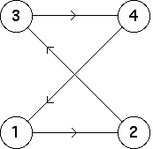

3. (a)
|
| The bin transitions are |
| Consequently, the only occupied length 2 addresses are 21, 32, 43 and $14. |
| The empty length 2 addresses are the remaining twelve: 11, 12, 13, 22, 23, 24, 31, 33, 34, 41, 42 and 44. |
| Note the allowed bin-to-bin transitions
determine a cycle, |
| From this we see the driven IFS converges to the 4-cycle consisting of the points having addresses (4321)infinity, (3214)infinity, (2143)infinity and (1432)infinity. |
These bin transitions can be encoded in the transition graph
|  |
Return to Exercises.